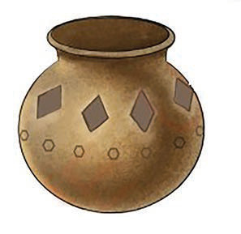

Utiaji nakshi vyungu vya udongo
Utiaji nakshi wa vyungu vinavyotengenezwa kwa udongo ni hatua muhimu sana katika kuvipa muonekano mzuri na wa kuvutia. Hatua hii inahitaji sana ubunifu na ustadi wa kipekee.
Njia za kutia nakshi vyungu
Zipo njia mbalimbali za kutia nakshi katika vyungu, kama vile kuchomachoma, kuchimba, kukwaruza na kutumia rangi.
(a) Nakshi kwa kuchomachoma, kuchimba na kukwaruza
Kuweka nakshi ya michoro kwenye chungu tumia vifaa vya kuchonga, kuunda maumbo na miundo kwenye chungu kwa kuchomachoma, kuchimba au kukwaruza wakati udongo bado ni laini. Vilevile, unaweza kuweka alama za asili kwa kutumia vifaa vya asili kama majani, mbao, au matundu ya asili ili kuacha alama kwenye udongo kabla ya kukikausha. Vielelezo namba 4 na 5 vinaonesha vyungu vilivyotiwa nakshi kwa njia ya kuchomachoma, kuchimba na kukwaruza.
